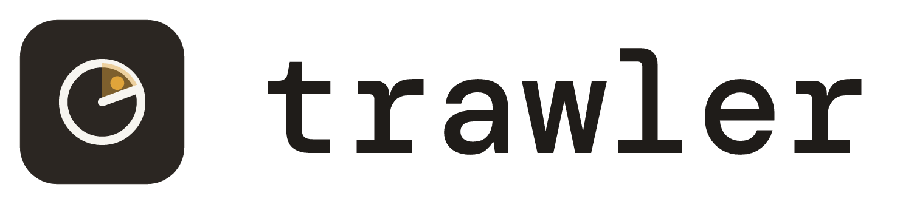
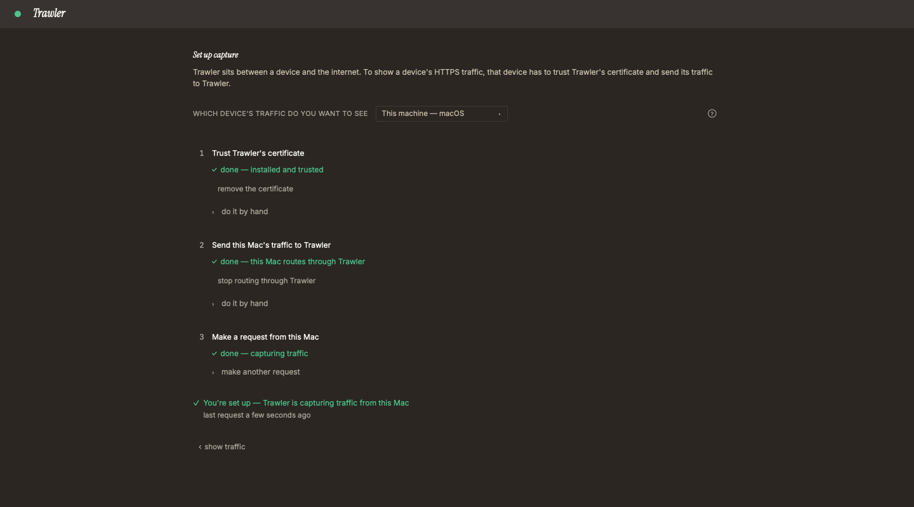

macOS
Your system
macOS 11 or later · Apple Silicon and Intel
First open: Privacy & Security → Open Anyway. Step by step
The one-page site and its 404 as W3 builds them: a mockup in both themes at 390 px and 1440 px, the download block with OS detection by one small same-origin script, every frame string, the asset list, the tokens with their contrast, the script's test plan, and the owner's rulings.
| Constraint | How this design meets it | Source |
|---|---|---|
| One same-origin script, no external request | Two HTML files, one CSS file, one script file (site.js, index only), local images. No inline script, no inline handler, no web font, no CDN. The page is complete with the script off; the script only reorders and highlights what is already there (Download detection). Theme by prefers-color-scheme, no toggle; disclosure would use native <details> | D2 ruling · Q3, Q4, Q13 · plan Design |
| System fonts, outlined wordmark | Text in system-ui, file names in ui-monospace; the wordmark is the generated PNG pair in a <picture>, exactly as the README shows it | Q9 · DEC-89 rules 2, 7 |
| The app's warm tokens; amber is the brand only | Dark = the app's canvas / ink / ink-body / ink-mute / hairline; light = DEC-89's paper and wordmark ink. Amber appears only inside the mark (wordmark, favicon): site.css carries no amber value and no other chromatic colour | ui/tailwind.config.js · DEC-89 rule 6 · DEC-19 |
| Public text | One voice (plain, second person, OS labels in bold as shown), English, no other tool named; every repeated fact is filled from the file that owns it (Copy, column Source); site.js holds no visible string: everything it shows is read from the page | DEC-91 rules 1–2 · Q2, Q5, Q7 |
| Contrast ≥ 4.5:1, both themes | Every text pair ≥ 6.2:1 (Tokens); the focus ring and the highlight border ≥ 13:1 against the page | brief · plan Design |
| Keyboard focus visible, reduced motion | A skip link, a 2 px ink ring on :focus-visible; no animation, transition or smooth scroll anywhere, so reduced motion has nothing to stop (Accessibility) | brief · plan Design |
| # | Call | Owner's ruling | What it changed here |
|---|---|---|---|
| D1 | Hero layout | A · centred stack | B (split) and C (top bar) and their CSS are gone |
| D2 | Download block | changed: OS auto-detection by a tiny same-origin script, on top of B (a card per OS) | B stays the base and works with no script; site.js puts the visitor's card first, highlights it, turns the hero button into that system's download and shows its first-open line; A (one table) and C (one button, folded files) are gone |
| D3 | Features | B · bullets + More screens | A (list alone) and C (cards) are gone |
The frames below are the real page rendered in isolation (one iframe each, the CSS in Markup), so 390 px and 1440 px reflow as a browser would. Frames marked with a detected state run the real site.js from this doc against a stand-in for the browser's navigator.
This is the base: what a visitor sees with JavaScript disabled, on a phone, or when the script cannot tell the system. Every OS and every file is one click; nothing depends on the script. The 390 px dark frame shows the keyboard focus ring on the first button.
1440 px · light · no script
1440 px · dark · no script
390 px · light · no script
390 px · dark · no script · focus on Download for…
The owner's ruling: a tiny same-origin script, no network request, no tracking, no storage. It reads what the browser already reports (navigator.userAgentData.platform, navigator.platform, navigator.userAgent, navigator.maxTouchPoints, and on Chromium the one async hint architecture), picks one download block, and changes nothing else.
| System | What a browser can tell | Primary (the hero button, first in the card) | Where the others sit |
|---|---|---|---|
| macOS | That it is a Mac. Not Apple Silicon from Intel (Safari reports MacIntel on both), not the macOS version (the UA is frozen at 10_15_7) | Trawler_‹v›_universal.dmg: one file serves both chips, so there is no arch step | None; the requirement line “macOS 11 or later · Apple Silicon and Intel” stays visible |
| Windows | That it is Windows. Arch only on Chromium, through userAgentData.getHighEntropyValues(['architecture']): async, absent in Firefox and Safari; the UA string says Win64; x64 on Arm too | ‹v›_x64-setup.exe, at once. It is promoted to ‹v›_arm64-setup.exe only when the hint answers "arm"; any other answer, a refusal or no hint keeps x64. x64 is the safe guess: most Windows PCs are x64, and Windows 11 on Arm runs x64 apps | The other arch's -setup.exe right below in the same card; each arch's .msi on its “or” line; the “Not sure which?” hint stays |
| Linux | That it is Linux, and arm64 when the UA or navigator.platform says aarch64/arm64 (or the Chromium hint says "arm"). Never the distribution | ‹v›_amd64.AppImage / ‹v›_aarch64.AppImage: it runs on any distribution, and installs and updates without a password (README: updating a .deb or .rpm asks for one) | .deb and .rpm on the “or” line under it, one click; the card's “Install commands” link goes to GUIDE#install |
| Phone, tablet, ChromeOS | Android, iPhone, iPad (also an iPad asking for the desktop site: MacIntel with touch points), CrOS, userAgentData.mobile | Unknown: the page stays as with the script off. Trawler is a desktop app; a phone visitor sees all three systems | |
| Anything else | Empty or unrecognised platform | Unknown, same as above | |
flowchart TD
OFF["script disabled or blocked"] --> U["unknown: page as built, cards macOS · Windows · Linux"]
S["site.js runs (defer, after parsing)"] --> M{"mobile, Android, iPhone, iPad, ChromeOS?"}
M -->|yes| U
M -->|no| P{"platform says mac?"}
P -->|yes| T{"touch points > 1?"}
T -->|"yes: iPad"| U
T -->|no| MAC["macos: universal dmg"]
P -->|no| A["arch = arm64 if UA or platform says aarch64 / arm64, else x64"]
A --> W{"platform says win?"}
W -->|yes| WIN["windows-arch: -setup.exe"]
W -->|no| L{"platform says linux?"}
L -->|yes| LIN["linux-arch: AppImage"]
L -->|no| U
WIN --> H{"Chromium hint: architecture = arm?"}
LIN --> H
H -->|yes| ARM["promote the arm64 block"]
H -->|"no, refused, absent"| KEEP["keep the pick"]
| State | Hero button | Hero line under it | Download cards |
|---|---|---|---|
| no script · unknown | Download for macOS · Windows · Linux → #download | hidden | macOS · Windows · Linux; x64 before arm64; no highlight |
macos | Download for macOS → the dmg | the file name · Other systems (#download) · Other downloads (releases/latest), then a copy of that card's first-open line with its GUIDE link | the picked card first, a 2 px ink border, “Your system” shown under its heading; the picked arch block first inside it; every other card and file unchanged |
windows-x64 | Download for Windows → x64-setup.exe | ||
windows-arm64 | Download for Windows → arm64-setup.exe | ||
linux-x64 | Download for Linux → amd64.AppImage | ||
linux-arm64 | Download for Linux → aarch64.AppImage |
The reorder moves DOM nodes, not CSS order, so the tab order and a screen reader's reading order follow what is seen. The always-present link under the cards (C26, releases/latest) stays in every state.
macos · 1440 px · dark
windows-x64 · 1440 px · dark
windows-arm64 (hint: arm) · 1440 px · dark
linux-x64 · 1440 px · dark
linux-arm64 · 1440 px · dark
macos · 390 px · light
windows-x64 · 390 px · light
windows-arm64 · 390 px · light
linux-x64 · 390 px · light
linux-arm64 · 390 px · light
The reference W3 copies (≈ 1.6 KB). A classic defer script, not a module: module scripts never run on a file:// origin, and the page must preview from disk. It reads navigator and the page, and writes only href, textContent, hidden, one class and node order. The frames above run exactly this text.
function detect(nav) {
const ua = (nav.userAgent || '') + ' ' + (nav.platform || '');
const data = nav.userAgentData;
const os = ((data && data.platform) || nav.platform || '').toLowerCase();
if ((data && data.mobile) || /android|iphone|ipad|ipod|cros/i.test(ua)) return null;
if (os.includes('mac')) return nav.maxTouchPoints > 1 ? null : 'macos';
const arch = /aarch64|arm64|armv8/i.test(ua) ? 'arm64' : 'x64';
if (os.includes('win')) return 'windows-' + arch;
if (os.includes('linux')) return 'linux-' + arch;
return null;
}
function show(key) {
const block = document.getElementById('dl-' + key);
if (!block) return;
const card = block.closest('.card');
const first = card.querySelector('.arch');
const file = block.querySelector('a.file');
card.parentElement.prepend(card);
if (first !== block) first.before(block);
card.classList.add('mine');
card.querySelector('.mine-tag').hidden = false;
document.getElementById('get').href = file.href;
document.getElementById('get-os').textContent = card.querySelector('h3').textContent;
document.getElementById('pick-file').textContent = file.textContent;
document.getElementById('pick-first').replaceChildren(...card.querySelector('.first').cloneNode(true).childNodes);
document.getElementById('pick').hidden = false;
}
const picked = detect(navigator);
if (picked) {
show(picked);
const data = navigator.userAgentData;
if (picked !== 'macos' && data && data.getHighEntropyValues) {
data.getHighEntropyValues(['architecture']).then((hint) => {
if (hint.architecture === 'arm') show(picked.replace('x64', 'arm64'));
}, () => {});
}
}The page's side of the contract: one block per file kind with id="dl-macos", dl-windows-x64, dl-windows-arm64, dl-linux-x64, dl-linux-arm64 (class arch, first link a.file = the primary), inside a .card with an h3, a hidden .mine-tag and a .first line; the hero's #get / #get-os button and the hidden #pick line with #pick-file and #pick-first. A missing id makes show return without a change, so a release lacking a file kind degrades to the base page.
Pages serves 404.html for any missing path at any depth, so its asset and home links are absolute under /Trawler/ (the mock links the full URL). It loads no script: its CSP has no script-src, so default-src 'none' refuses any.
1440 px · light
1440 px · dark
390 px · light
390 px · dark
The source of every frame above sits in this file after </main>: #t-index and #t-404 are the two pages, #t-site-css is site.css, #t-mock-css only forces a theme and crops sections for the frames; site.js is the visible listing. W3 copies the pages, site.css and site.js, adds <script src="site.js" defer></script> at the end of the index <head>, and turns each data-fill into W2's marker (W2 owns the marker syntax).
| Section · element | Filled from (W2) | Frame holds |
|---|---|---|
.hero h1 | README.md, the <h3> pitch | — |
.hero .sub | README.md, the paragraph under the pitch | — |
.hero .shot alt | README.md, s1's alt text | src, width="1440" height="800" |
#download .meta | release JSON: tag_name (without v), published_at (date part), html_url | “Version”, “release notes” |
#download file links | release JSON assets[].name per kind package::Os::bundles names for a final; href = releases/download/v‹v›/‹name›; SHA256SUMS the same way | OS, arch and requirement labels; the dl-* ids; first-open lines |
#features h2 + ul | README.md “What you can do” heading and bullets (subset renderer: text, code, bold, links) | — |
#features .gallery | README.md “More screens” table: header cells = captions, images + alt | loading="lazy", sizes |
#privacy .lead | PRIVACY.md, the paragraph under # | the site sentence and the link |
| every GitHub link | links.rs USER_GUIDE / SOURCE_CODE base: https://github.com/lesslucifer/Trawler/blob/main/‹file› | the file name |
<title>, description, OG | pitch, sub line, W2's base-URL constant | “Trawler — ” |
Dark takes the app's tokens by name; light takes DEC-89's paper and wordmark ink, with two body tones picked for ≥ 4.5:1 (computed with the WCAG 2 formula; W2's contrast test recomputes them from site.css).
| Token | Use | Light | Dark (app name) | Light vs --bg | Dark vs --bg |
|---|---|---|---|---|---|
--bg | page | #f4f1ea paper | #2b2622 canvas | — | — |
--ink | headings, links, primary button fill, focus ring, the picked card's border, “Your system” | #1f1c19 | #f7f5f0 ink | 15.0:1 | 13.7:1 |
--body | body text | #3d3833 | #c9c0ad ink-body | 10.3:1 | 8.3:1 |
--mute | labels (arch, requirement, captions, footer, the hero line) | #5f5850 | #aea69c ink-mute | 6.2:1 | 6.2:1 |
--line | section rules, card and image borders (non-text) | #d6cfc2 | #3f3a36 hairline | decoration | decoration |
| primary button | --bg text on --ink | inverse of the page | 15.0:1 | 13.7:1 | |
Not used as text: amber #e0a43a (brand, inside the images only) and deep amber #a8741a (3.6:1 on paper). The picked card is marked by border weight and a word, never by colour alone.
| Item | Spec |
|---|---|
| Language, structure | lang="en"; one h1 (the pitch); h2 per section, h3 per OS, h4 per arch; landmarks main, footer, nav with aria-label |
| Skip link | “Skip to download” first in the body, off-screen until focused, then shown top-left on --bg |
| Focus | :focus-visible → outline: 2px solid var(--ink); outline-offset: 2px on links, buttons and summary; never removed |
| Motion | None: no transition, animation or scroll-behavior: smooth in site.css (W2 can assert their absence); the script changes the page once, before the visitor acts |
| Detection | The picked card is moved in the DOM, so the reading and tab order match the screen; “Your system” is real text in the card, not a CSS content; the hero button's name says the system (“Download for Windows”) |
| Images | Alt from the README; the wordmark's alt is “Trawler”; every image has width/height; below-the-fold images loading="lazy" |
| Links | Underlined, ink, descriptive text (a file link's text is the file name); a button is a styled link, so Enter activates it |
| Narrow screens | One column under 720 px; file names wrap anywhere, so nothing scrolls sideways at 320 px |
“frame” = hand-written in site/, held by the deny-list test; “filled” = taken at build from the source named. Bold marks OS labels quoted exactly. site.js adds no string of its own.
| # | Where | String | Source |
|---|---|---|---|
| C1 | <title> index | Trawler — See every HTTP and HTTPS request your apps make. | frame “Trawler — ” + filled pitch (Q5) |
| C2 | meta description, og:description | the pitch · the sub line | filled README |
| C3 | og:title, og:site_name | Trawler | frame |
| C4 | skip link | Skip to download | frame |
| C5 | wordmark alt | Trawler | frame (README's alt) |
| C6 | h1 | See every HTTP and HTTPS request your apps make. | filled README pitch |
| C7 | sub line | A free, open-source debugging proxy for macOS, Windows and Linux. Capture this machine, your phone or a simulator, read each request and send it again — everything stays on your machine. | filled README |
| C8 | primary button | Download for ‹macOS · Windows · Linux›; detected: Download for ‹the picked card's h3› | frame (the README's link words); the script copies the h3 |
| C9 | second button | Read the guide | frame |
| C10 | hero line, detected only | ‹file name› · Other systems · Other downloads | frame words; the file name copied from the picked link · links #download, releases/latest |
| C11 | hero first-open line, detected only | the picked card's C22, C23 or C24, with its link | copied by the script, no new string |
| C12 | s1 alt | Trawler's main window: the list of captured requests, one JSON response open in the inspector | filled README |
| C13 | h2 | Download | frame |
| C14 | under it | Version ‹0.1.0› · ‹2026-11-07› · release notes | frame words, filled values |
| C15 | h3 | macOS · Windows · Linux | frame |
| C16 | under the picked card's h3, detected only | Your system | frame (in every card, hidden) |
| C17 | macOS requirement | macOS 11 or later · Apple Silicon and Intel | frame (= README install row) |
| C18 | h4 | x64 · arm64 | frame |
| C19 | file links | Trawler_0.1.0_universal.dmg … (the asset name) | filled release |
| C20 | before a second file | or | frame |
| C21 | Windows hint | Not sure which? Settings → System → About → System type. | frame (plan) |
| C22 | macOS first open | First open: Privacy & Security → Open Anyway. Step by step | frame (= README) · link GUIDE.md#install |
| C23 | Windows first open | First open: More info → Run anyway. Step by step | frame (= README) · link GUIDE.md#install |
| C24 | Linux first open | No prompt on first open. Install commands | frame (= README “no prompt”) · link GUIDE.md#install |
| C25 | under the cards | Check your download: SHA256SUMS · how to check | frame · links: the release asset, GUIDE.md#check-your-download |
| C26 | always present, every state | Other downloads: every file of the latest release, on GitHub | frame · link releases/latest (Q3, D2 ruling) |
| C27 | h2 + list | What you can do · the seven bullets | filled README |
| C28 | gallery | Setup · Filters · Send again, each image's alt | filled README “More screens” |
| C29 | h2 | Privacy | frame |
| C30 | lead | Trawler keeps your traffic on your machine. It has no account, no analytics, no crash reporting and no telemetry. | filled PRIVACY.md |
| C31 | after it | This site keeps the same promise: no analytics, no cookies, no tracking, and nothing loaded from any other site. One small script puts your system's download first; it reads only what your browser reports about your system, and stores and sends nothing. GitHub hosts this page and sees your IP address, as any web host does. | frame · backed by W2's CSP, no-external and site.js scan tests; the last sentence matches PRIVACY.md's “GitHub sees your IP address” wording |
| C32 | link | What leaves your machine and what stays | frame · link PRIVACY.md |
| C33 | footer nav “Project files” | Guide · Privacy · Changelog · Contributing · Security · Licence · Report an issue · Source code | frame · blob/main/GUIDE.md, PRIVACY.md, CHANGELOG.md, CONTRIBUTING.md, SECURITY.md, LICENSE; issues/new/choose; the repo |
| C34 | 404 | <title> Page not found — Trawler · h1 This page doesn't exist. · Go to the Trawler home page | frame |
Why C31 says what it says: “no tracking” and “sends nothing” are true of the site and the script (CSP default-src 'none' refuses every connection; the scan refuses every API that could make one). It does not claim GitHub sees nothing: the host serves each request, and PRIVACY.md already says the same of the update check. A download is a click to github.com the visitor makes.
| Published as | Copied from | Bytes | Used by | Load |
|---|---|---|---|---|
index.html, 404.html, site.css | site/ (W3), filled by W2 | ≤ 30 KB together | — | blocking (CSS) |
site.js | site/ (W3), copied as is (no fill) | ≤ 3,072 (cap, W2 test); the reference ≈ 1.6 KB | index.html only | defer, never blocks rendering |
favicon.svg | ui/public/favicon.svg | 601 | <link rel="icon">, both pages | browser |
wordmark-light.png · wordmark-dark.png | ui/src-tauri/icons/brand/ (740×168, shown at 370×84) | 23,151 · 23,228 | hero, 404 (one per visitor, by theme) | eager |
s1-main-window.png | .github/screenshots/ (1440×800) | 262,726 | hero | eager |
s2-setup-this-machine.png · s3-filter-chips.png · s5-send-again.png | .github/screenshots/ | 81,625 · 58,666 · 228,285 | gallery | lazy |
social-preview.png | ui/src-tauri/icons/brand/ (1280×640) | 47,651 | og:image, twitter:image (absolute URL) | never by the page |
First view: ≤ 30 KB + 3 KB + 23 KB + 263 KB ≈ 319 KB, inside the plan's 350 KB. Nothing is redrawn: every image is a generated file DEC-89 already owns.
| Tag | Value |
|---|---|
| CSP, index | default-src 'none'; img-src 'self'; style-src 'self'; script-src 'self'; base-uri 'none'; form-action 'none' (meta). script-src 'self' admits site.js and refuses inline script and inline handlers; connect-src falls back to 'none', so the browser itself refuses any request a script could try |
| CSP, 404 | default-src 'none'; img-src 'self'; style-src 'self'; base-uri 'none'; form-action 'none': no script |
| script | <script src="site.js" defer></script>, last in the index <head>; the only <script> on the site |
| referrer | no-referrer |
| colour scheme | <meta name="color-scheme" content="light dark"> so form controls and scrollbars follow the theme |
canonical · og:url | https://lesslucifer.github.io/Trawler/ (W2's base-URL constant, Q1) |
| OG / Twitter | og:type website, C2, C3, og:image = base + social-preview.png 1280×640, twitter:card summary_large_image |
| 404 | favicon and CSS by absolute path /Trawler/…; <meta name="robots" content="noindex"> |
Two layers: a static scan W2 implements in its site checks (hermetic, Rust, no browser), and a behavioural test W3 builds with the file (hermetic, Node's own test runner, no new dependency).
| Check | Refused when |
|---|---|
| Network | site.js contains any of fetch, XMLHttpRequest, WebSocket, WebTransport, sendBeacon, EventSource, RTCPeerConnection, import(, Worker, serviceWorker, :// |
| Code from strings | eval, Function(, setTimeout( / setInterval( with a string, innerHTML, outerHTML, insertAdjacentHTML, document.write |
| Storage, identity | document.cookie, cookieStore, localStorage, sessionStorage, indexedDB, caches |
| Requests by side effect | createElement, new Image, .src, srcset, location, open( (an added image or a navigation would load something; CSP covers images, not navigation) |
| Size | more than 3,072 bytes |
| Pages | index.html has anything but exactly one <script src="site.js" defer></script>; any page has an inline script or an on…= attribute; 404.html has a <script>; either CSP meta differs from Head |
The scan is a tripwire, not a proof: a computed name (window['fe' + 'tch']) would slip past it. The CSP is the enforcement (the browser refuses every connection and every foreign image), and the code-review skill now covers site/ (Q13).
Least heavy option: site/site.test.mjs with node:test and node:vm. It reads site.js as text and runs it in a fresh vm context per case, with a stand-in navigator from the table below and a stand-in document whose getElementById records each id and returns null (so show stops at its guard). It asserts the recorded ids, awaiting one tick for the async hint. That covers the whole script as shipped, top-level flow included, without a DOM library or a browser. W2's site check runs it with node --test (Node is already a repo requirement: ui build, CI setup-node 24). The DOM side (reorder, highlight, hero line) is shown by the frames in this doc and by W3's shots; a jsdom case is not worth a dependency for five assignments.
| Case | userAgentData | platform · touch | UA (abridged) | Ids asked |
|---|---|---|---|---|
| Safari, Mac | — | MacIntel · 0 | Macintosh; Intel Mac OS X 10_15_7 … Safari | dl-macos |
| Chrome, Mac | platform macOS, hint arm | MacIntel · 0 | Macintosh … Chrome | dl-macos (no hint asked) |
| iPad, desktop site | — | MacIntel · 5 | Macintosh … Safari | none |
| Edge, Windows x64 | platform Windows, hint x86 | Win32 · 0 | Windows NT 10.0; Win64; x64 | dl-windows-x64 |
| Edge, Windows on Arm | platform Windows, hint arm | Win32 · 0 | Windows NT 10.0; Win64; x64 | dl-windows-x64, then dl-windows-arm64 |
| Chrome, hint refused | platform Windows, hint rejects | Win32 · 0 | Windows NT 10.0; Win64; x64 | dl-windows-x64 |
| Firefox, Windows | — | Win32 · 0 | Windows NT 10.0; Win64; x64; rv … Firefox | dl-windows-x64 |
| Firefox, Linux x64 | — | Linux x86_64 · 0 | X11; Linux x86_64 … Firefox | dl-linux-x64 |
| Firefox, Linux arm64 | — | Linux aarch64 · 0 | X11; Linux aarch64 … Firefox | dl-linux-arm64 |
| Chrome, Linux arm64 | platform Linux, hint arm | Linux x86_64 (reduced) · 0 | X11; Linux x86_64 … Chrome | dl-linux-x64, then dl-linux-arm64 |
| Chrome, Android | platform Android, mobile | Linux armv81 · 5 | Linux; Android 14 … | none |
| Safari, iPhone | — | iPhone · 5 | iPhone; CPU iPhone OS 17_5 … | none |
| Chrome, ChromeOS | platform Chrome OS | Linux x86_64 · 0 | X11; CrOS x86_64 … | none |
| Nothing reported | — | empty · 0 | empty | none |
| # | Ruling | Who · when | In this design |
|---|---|---|---|
| Q1 | lesslucifer.github.io/Trawler | owner · 2026-11-08 (plan v2) | canonical, OG, 404 paths |
| Q3 | build-time release read + always-present releases/latest link | same | C14, C19, C26; detection reads the built page, never the network |
| Q4 | no analytics | same | CSP, C31, the site.js scan |
| Q5 | README pitch exactly | same | C1, C6 |
| Q6 | link out to blob/main/GUIDE.md | same | C9, C22–C25, C33 |
| Q7 | English only | same | lang="en" |
| Q9 | system fonts + outlined wordmark | same | Frame, Assets |
| Q13 | flips to yes: the site now has a script, so site/ becomes a code path (the plan's own rule: “a WU that adds JS adds site/ to is_code”) | owner · 2026-11-08 (W1 round 2, with D2) | W2 edits is_code in xtask/src/notes.rs; the docs/workflow.html T1 line is W5's owner mr commit (not edited here); the code-review skill covers site/ from W3 on |
| D1 | hero: A, centred stack | owner · 2026-11-08 (W1 round 2) | the page |
| D2 | download: one card per OS (B) as the no-script base + OS auto-detection by a tiny same-origin script (no network request, no tracking, no storage) that puts the visitor's card first, highlights it with its main download and sets the first-open line; an “Other downloads” link to releases/latest stays visible | same | Download detection, site.js, CSP script-src 'self', C8, C10, C11, C16, C26, C31, tests; supersedes the plan's “No OS detection” (Design) and its non-goal line |
| D3 | features: B, bullets + More screens | same | the page, C27, C28 |
| Builds | Who | Checked by |
|---|---|---|
site/index.html, site/404.html, site/site.css, site/site.js from #t-index, #t-404, #t-site-css and the listing; the mock's forced themes become @media (prefers-color-scheme: dark), already written that way in #t-site-css | W3 | W2's link, CSP/no-external, deny-list, contrast, kinds and site.js scan tests; code review |
site/site.test.mjs (the fixture table) | W3 | run by W2's site check |
is_code += site/; the site.js scan; running node --test site/ | W2 | W2's own tests |
| Shots at 390 × 844 and 1440 × 900, light and dark, script off (the base) and script on (the host's own state), beside these frames in its result | W3 | owner sign-off on W3 |
Not verified: rendering on a real phone and in Safari/Firefox (frames checked in Chrome only); the detection on real Windows on Arm, Linux arm64, iPadOS and ChromeOS browsers (the fixture values are each browser's documented reports, not captured here); that headless Chrome's --blink-settings=scriptEnabled=false gives W3 a script-off shot (to prove in W3); whether the hero line appears before first paint (a defer script runs before DOMContentLoaded, usually before the first paint of a page this small, not always); that GitHub Pages sets no cookie (check in DevTools on the live page, W4); that GitHub's anchor #check-your-download stays stable (W2's link test reads GUIDE.md's headings); the Windows System type path on Windows 10.

A free, open-source debugging proxy for macOS, Windows and Linux. Capture this machine, your phone or a simulator, read each request and send it again — everything stays on your machine.

Your system
macOS 11 or later · Apple Silicon and Intel
First open: Privacy & Security → Open Anyway. Step by step
Your system
Not sure which? Settings → System → About → System type.
First open: More info → Run anyway. Step by step
Your system
No prompt on first open. Install commands
Check your download: SHA256SUMS · how to check
Other downloads: every file of the latest release, on GitHub
status:4xx or -method:OPTIONS.


Trawler keeps your traffic on your machine. It has no account, no analytics, no crash reporting and no telemetry.
This site keeps the same promise: no analytics, no cookies, no tracking, and nothing loaded from any other site. One small script puts your system's download first; it reads only what your browser reports about your system, and stores and sends nothing. GitHub hosts this page and sees your IP address, as any web host does.